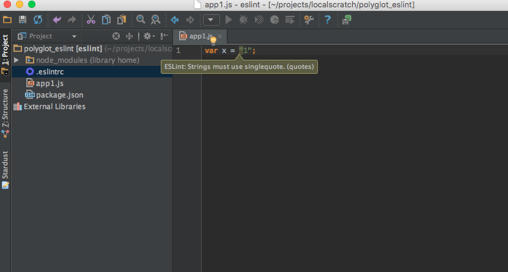

Linting with ESLint¶
Are you picky about Python code styling? A big believer in PEP 8? The world of JavaScript has linting too.
In this article we take a look at frontend tooling for JavaScript, namely linting, and how we can hook this into PyCharm.
Overview¶
- Show more JS tooling and its support in PyCharm
- Better, more configurable linting with eslint
- Prep for linting on newer JS features
Linting: Why and What¶
Smart editors, and certainly IDEs like PyCharm, can help you when coding, spotting things such as unbalanced quotes and other syntactic mistakes. They also, though, can tap into tools that help enforce style conventions: rules that, while syntactically legal, are considered bad form.
These tools are called linters. Python has linting software such as pylint and style guides such as the centrally-maintained PEP 8. All hail our style overlords!
The world of JavaScript has linting too, though not as much consensus. jshint, jslint, jscs…quite a history, and PyCharm supports all of them. Recently, one linter has become the tool of choice for the modern node/npm toolchain: ESLint. It’s fast, flexible, modular, and well-maintained.
Let’s plug it in and hook it up to PyCharm.
Installation¶
ESLint is written in JavaScript and installable with npm. Let’s make
a new package.json and install eslint:
$ npm init --yes
$ npm install --save-dev eslint
The npm install command downloads ESLint into our node_modules
local packages and records in package.json that it is a development
dependency. Meaning, the software isn’t needed for our application, but
is used by developers when making a sandbox. This distinction can be seen
in our resulting package.json:
{
"name": "pylyglot",
"version": "1.0.0",
"description": "Series of articles for Polyglot Python with PyCharm",
"main": "index.js",
"scripts": {
"test": "echo \"Error: no test specified\" && exit 1"
},
"repository": {
"type": "git",
"url": "git+ssh://git@github.com/pauleveritt/pauleveritt.github.io.git"
},
"author": "Paul Everitt",
"license": "ISC",
"bugs": {
"url": "https://github.com/pauleveritt/pauleveritt.github.io/issues"
},
"homepage": "https://github.com/pauleveritt/pauleveritt.github.io#readme",
"devDependencies": {
"eslint": "^1.10.3"
}
}
If we didn’t want to open a console, or couldn’t remember the package name, we could ask PyCharm to find, install, and record the dependency:
That is, we visit Preferences -> Languages & Frameworks -> Node.js
and NPM, then click the + to search for and install eslint.
To save the dependency, check the Options box and type
save-dev into the input.
Configuration¶
Style rules are enforced in a
JSON configuration file .eslintrc stored at the top of the project.
For example:
{
"rules": {
"quotes": [
1,
"single"
]
}
}
This configuration says: “In this project, everyone should use single quotes in JavaScript files”.
Running¶
That’s nice to record that, but how do we enforce it? Like pylint,
you can run a command against your source files and see who has been
naughty and nice. This source file has double quotes:
var x = "1";
If we “lint” it with the eslint command:
$ node_modules/.bin/eslint app1.js
…we get warnings that Strings must use singlequote:
Remember, ESLint is written in JavaScript as part of the frontend,
Node toolchain. It fits in with the various standards we have been
discussing. In this case, npm packages install their console
scripts in node_modules/.bin. This is similar to how Python
and setuptools entry points create console scripts in your
virtual environment’s bin directory.
Command Line? PyCharm!¶
Of course we don’t want to have to run a command to get help about mistakes. If only we had an IDE that supported modern JavaScript editing with modern linting?
PyCharm supports the various JavaScript linters, including
first-class support for ESLint. First, enable it in your project
by visiting Preferences -> Languages & Frameworks -> JavaScript
-> Code Quality Tools -> ESLint. Then, enable it, point to the
installed node_module, and let it search for the .eslintrc
file:
Now when editing a file with a rule violation, PyCharm will provide real-time warning and errors as you type:
Wrapup¶
Like with Python, we now have a JavaScript style configuration file that can be checked into version control. We can check our styles both from the command line and in the editor. We can use the command line to warn during package building and hook it up to Travis during continous integration.
As we’ll see in a later section, ESLint has another distinguishing characteristic: its first two letters (ECMAScript) mean it is focused on future syntaxes in JavaScript, ES2015 and beyond.